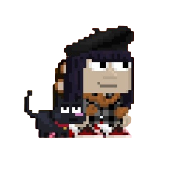
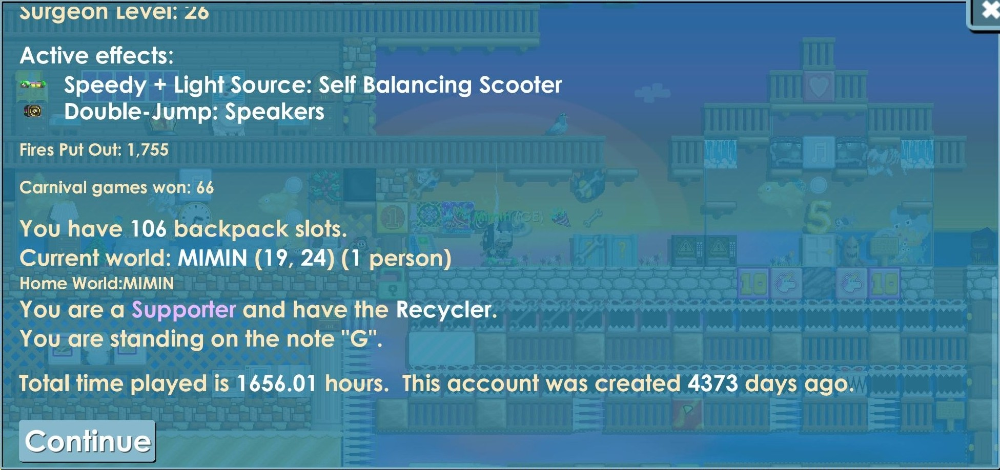

growtopia foi um dos jogos mais importantes da minha infância, e minha conta tem, aproximadamente, calculando...+ dias.
infelizmente, o jogo não é mais o mesmo daquela época; agora a ubisoft o comprou e ele está cheio de cassinos e bots.
às vezes até sonho com o jogo: minha conta sendo hackeada ou meu mundo sendo destruído. em alguns desses sonhos, lembro de mandar /msg para os moderadores porque um hacker estava acabando com meu mundo...
é muito doido pensar que o jogo que eu jogava aos 10 anos foi tão importante que ficou gravado no meu cérebro/nos meus sonhos.

